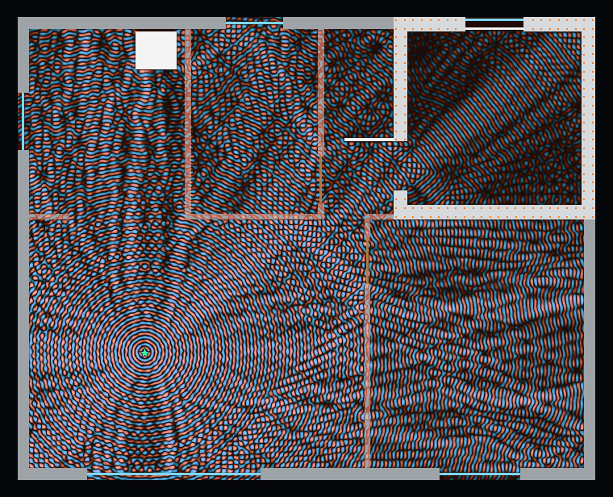
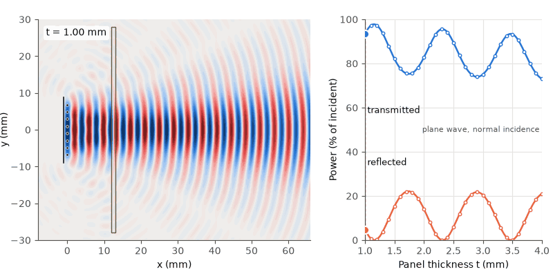
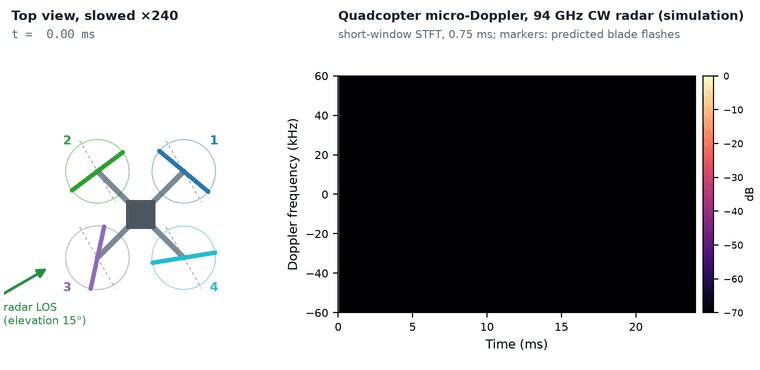

Electromagnetic simulation · Antennas · Radar
Electromagnetic simulation: antennas, propagation and radar
An electromagnetic simulation shows how a wave travels through a structure, whether an antenna, an apartment or a car bumper, before that structure is built or measured. Most models on this page were built in COMSOL Multiphysics. In published work I have also used CST Studio Suite . I process and analyse the results in MATLAB and Python and, where possible, compare them with measurements in the lab's anechoic chamber.
Wi-Fi in an apartment with a safe room


A 2D model of a 10 m × 8 m apartment with a reinforced-concrete safe room, a steel blast door and a steel shutter, with building materials from ITU-R P.2040-4. The field is solved twice, with the safe-room door open and closed.
- Safe-room average 12 dB below the living room, door open
- 32 dB below, door closed
- 3.6 million degrees of freedom per door state
Horn antenna with a focusing lens at 10 GHz


A 3D-printed conical horn with a biconvex PTFE lens, from work published in Electronics in 2025. The lens turns the diverging wavefront of the horn into a converging one and concentrates the power in a small spot in front of the antenna.
- Focal-spot width (half power): about 27 mm, 0.89 wavelength
- Measured and simulated focus: both about 67 mm from the lens front surface, about 100 mm from the horn aperture
Antipodal Vivaldi ultra-wideband antenna


An antenna on a 60 × 70 mm Rogers RO4003C board, designed for a 3 GHz lower-frequency target. The 3D model includes the feed port, PML and a far-field calculation.
In simulation:
- |S11| ≤ −10 dB from about 3.6 GHz to the end of the 12 GHz sweep, with a narrow region near 5 GHz where it rises to about −9 dB
- Boresight realized gain 8.3 to 9.1 dBi between 6 and 11 GHz
77 GHz automotive radar behind a bumper


An 8-element array radiates through a polypropylene-blend bumper panel whose thickness sweeps from 1 to 4 mm. When the thickness is a multiple of half a wavelength in the plastic, the reflection from the panel drops close to zero. At other thicknesses part of the power returns to the radar. The model is 2D.
- Transmission peaks at 1.16, 2.32 and 3.48 mm
- Up to 22% of the power reflected at mismatched thickness (normal incidence)
- On the 3.48 mm panel a metallic-flake basecoat raises the reflection to about 40%; at 1.98 mm the painted panel loses 0.87 dB
Quadcopter micro-Doppler at 94 GHz

A simulation of the 94 GHz CW radar return from a four-rotor drone. Each blade is a line of point scatterers, and the model is written in Python. Each time a blade crosses perpendicular to the radar line of sight, the spectrogram shows a vertical flash whose height is set by the blade-tip Doppler frequency.
- Blade flashes reach 45 kHz on either side of the body line
- One flash per rotor every 5.5 to 6.5 ms
- A spectral line comb (HERM) for each rotor, spaced 155, 164, 170 and 181 Hz
More simulations on this site

Radar cross-section (RCS)
Plane-wave scattering from a target, COMSOL model

Magnetic mirror trap
An electron orbit between two magnetic lenses

Compact IFEL accelerator
Electron acceleration in a helical undulator driven by a terahertz wave, COMSOL model
Applied magnetism
Magnetostatic COMSOL models of permanent-magnet undulators and magnetic field maps